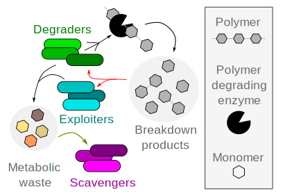

About
Microbial communities are critical for human health and agriculture, and control all biogeochemical cycles on earth. Understanding these communities is critical for both basic science and applications. I develop novel experimental, computational, and theoretical approaches to study microbial communities in the lab and in nature
Cooperation in biology is widespread and fundamental. For example, cooperation is at the heart of the evolution of multicellularity, one of the major transitions in evolution. Therefore, understanding the evolution and ecology of cooperative behaviors is central to our understanding of nature. Cooperation is also widespread in simple organisms like bacteria, which mostly cooperate by producing public-goods - molecules that benefit the entire community but are costly to produce. This form of cooperation is especially susceptible to parasitism, or cheating, by individuals that benefit from the public-good but do not produce it themselves. My scientific journey so far has been focused on exploring the consequences of this conflict between cooperation and cheating on bacterial evolution and ecology.
My recent work on marine bacterial communities that degrade chitin saw this interest take many forms, where I collaborated heavily across different projects. Chitin is the most abundant polysaccharide in marine environments, and the second most abundant polysaccharide on earth after cellulose. Chitin recycling by bacterial communities accounts for a significant portion of marine net primary production and is a central process in the marine carbon cycle. Bacteria must degrade chitin extracellularly before utilizing it for growth by secreting specialized enzymes called chitinases. Because the released degradation products are free to diffuse in the environment, bacteria that are able to consume these molecules but do not degrade the polymer can be regarded as cheaters.
 In my main postdoc project (Pollak et. al. 2021) we asked a seemingly simple question – what is the effect of cheating interactions on community dynamics and chitin turnover? Because most data on bacterial communities in the environment is DNA sequence data, we wanted to develop computational methods that could answer this question using genomic information. This is non-trivial because of the gap in our knowledge about the molecular function of many genes found in environmental DNA samples, and because we don’t know which cellular processes characterize cheaters. We solved both issues by identifying thousands of genes that are co-gained/lost together with chitinases from bacterial genomes. Co-evolution is a strong predictor of shared function and our assumption was that the identified genes contribute to chitin utilization. The identified genes encoded for diverse functions besides metabolism such as motility and environmental sensing, but were mostly of unknown function. We developed a machine-learning algorithm to identify exploiters based on the co-evolving genes, and found that cheating evolved multiple times throughout evolution, and that exploiters are as common as degraders during early stages of chitin degradation, potentially impacting carbon turnover on a global scale.This work fundamentally changed our view of community dynamics and function. Collaborating with the lab of Prof. Uwe Saur at ETH, we showed using metabolomics that chitin degraders produce characteristic degradation and metabolic waste products, thereby controlling the downstream assembly of the community (Pontrelli et. al. 2022). Finally, we utilized the tools I developed to characterize the processes contributing the variability in community development on individual chitin particles, finding that predation by bacteriophages is a major factor contributing to variability (Szabo et. al. PNAS 2022).